3 Baumdiagramme
Wie du dich spätestens jetzt wieder erinnerst, geht es bei dem Thema “Wahrscheinlichkeit” eigentlich nur darum, richtig zu zählen.
Entweder man führt ein Zufallsexperiment schrecklich oft durch und ermittelt die relativen Häufigkeiten, dann muss man also die Anzahl der Durchführungen des Zufallsexperimentes ordentlich mitzählen und eine saubere Strichliste für das Auftreten der einzelnen möglichen Ergebnisse führen und sie hinterher auszählen.
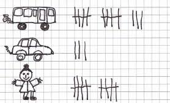
Oder - im Falle der Laplace-Wahrscheinlichkeit - man zählt die für das jeweilige Ereignis günstigen Ergebnisse (z.B. die Zahlen 2, 4 und 6, wenn das Ereignis “Würfeln einer geraden Zahl” lautet) und dividiert diese durch die Anzahl der möglichen Ergebnisse (beim sechsseitigen Würfel also die Ergebnisse 1, 2, 3, 4, 5 und 6). Hier gilt ja für die Wahrscheinlichkeit eines Ereignisses immer:
\(P(Ereignis) = \frac{\;fuer\;das\;Ereignis\;guenstige\;Ergebnisse}{alle\;moeglichen\;Ergebnisse}\)
Betrachte für ein weiteres kleines Beispiel noch einmal kurz folgendes Glücksrad:

Da alle acht Kreissektoren gleich groß sind, bleibt das Glücksrad also bei jedem der acht Sektoren mit der gleichen Wahrscheinlichkeit stehen - hier handelt es sich um ein Laplace-Experimet, bei dem es acht mögliche Ergebnisse gibt. (Nein, genau auf einer Grenze zwischen zwei Sektoren kann das Glücksrad nicht stehen bleiben. So ist das in Mathe.) Das Glücksrad kann so stehen bleiben, dass der Zeiger auf den Sektor mit der 1 zeigt oder auf den Sektor mit der 2 oder auf den Sektor mit der 3 oder auf den Sektor mit der 4 oder auf den Sektor mit der 5 oder auf den Sektor mit der 6 oder auf den Sektor mit der 7 oder auf den Sektor mit der 8. (Puh)
Möchte man nun berechnen, wie groß die Wahrscheinlichkeit ist, dass das Glücksrad so stehen bleibt, dass der Zeiger am Ende auf einen blauen Sektor zeigt, dann muss man also noch zählen, wie viele blaue Sektoren es gibt. Es gibt zwei blaue Sektoren: den mit der 1 und den mit der 5. Dann setzt man seine Zählergebnisse in die Laplace-Formel ein:
\[P(blau)=\frac{2}{8}=\frac{1}{4}=0,25\] Das war’s.
In beiden Fällen (Strichliste und Laplace-Wahrscheinlichkeit) ermittelt man die Wahrscheinlichkeit also durch Abzählen. Mehr muss man nicht tun - nur richtig zählen sollte man.
Wofür dann jetzt ein Baum?
Beim Richtigzählen kann einem ein Baumdiagramm helfen. Es hilft einem nämlich den Überblick zu behalten. Sicher, wenn man nur abzählen soll, wie viele Ergebnisse es geben kann, wenn man mit einem sechseitigen Würfel würfelt, obiges Glücksrad dreht oder eine Münze wirft, dann braucht man kein Baumdiagramm, um den Überblick zu behalten. Zählen kann aber ganz schön schnell ganz schön schwierig werden.
Wenn sich Frau D. anziehen muss, stellt sich natürlich (auch bei ihrem spärlich ausgestatteten Kleiderschrank) die Frage, welche Hose sie mit welchem Pulli kombinieren soll.
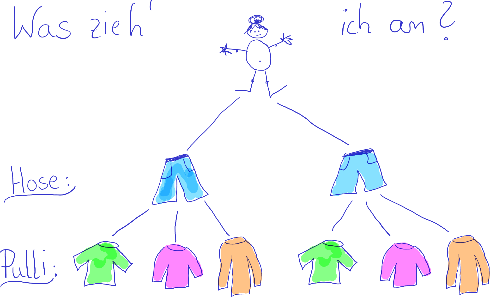
Bei lediglich zwei Hosen und drei Pullis braucht man zugegebenermaßen auch nicht unbedingt einen helfenden Baum. Die sechs Möglichkeiten kann man vermutlich noch ohne Baumdiagramm notieren. Aber auch hier hilft der Baum, den Überblick zu behalten. Mit seiner Hilfe kann man alle Kleidungskombinationen übersichtlich darstellen.
Jeder Pfad durch den Baum entspricht einer Kleidungskombination. Die Gesamtzahl der Möglichkeiten entspricht der Anzahl der Baumenden. Die Anzahl der unterschiedlichen Kombinationen lässt sich aber auch berechnen. Man erhält sie, indem man die Anzahlen der Möglichkeiten auf den einzelnen Stufen multipliziert. Hier gibt es 2 Hosen und 3 Pullis. Damit erhält man \(2 \cdot 3 = 6\) Kleidungskombinationen.
Beispiel 1
Aus den Ziffern 2, 4 und 6 sollen dreistellige Zahlen gebildet werden. Erstelle ein Baumdiagramm, dem alle dreistelligen Zahlen entnommen werden können, die gebildet werden können, ..
- … wenn jede Ziffer nur einmal vorkommen darf.
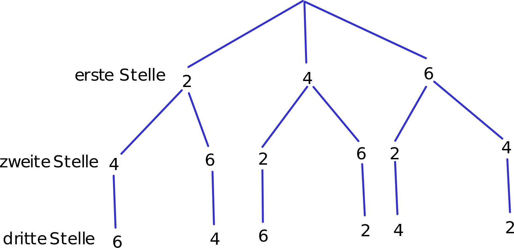
- … wenn jede Ziffer mehrmals vorkommen darf.
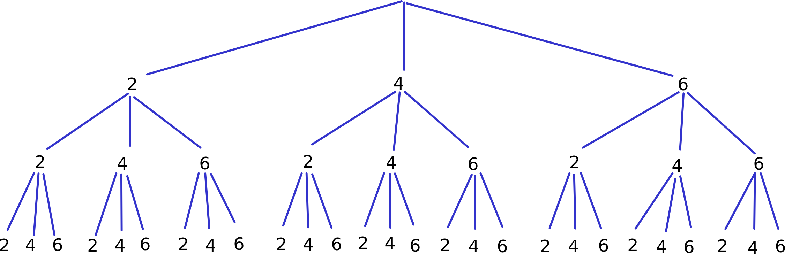
- Wie viele dreistellige Zahlen können in Teilaufgabe a), wie viele in Teilaufgabe b) gebildet werden?
Wenn jede Ziffer nur einmal vorkommen darf, können folgende 6 Zahlen gebildet werden: 246, 264, 426, 462, 624, 642
Wenn jede Ziffer mehrmals vorkommen darf, können 27 Zahlen gebildet werden. Du kannst sie die Pfade entlang ablesen. Die kleinste ist 222, die größte ist 666.
Beispiel 2
Pepe und Nele spielen “Schere, Stein, Papier”.
Stelle die möglichen Kombinationen in einem Baumdiagramm dar.
Bei wie vielen Kombinationen gewinnt Pepe?
- Auf der ersten Stufe wird Pepes Wahl notiert, auf der zweiten Stufe steht die Wahl von Nele:
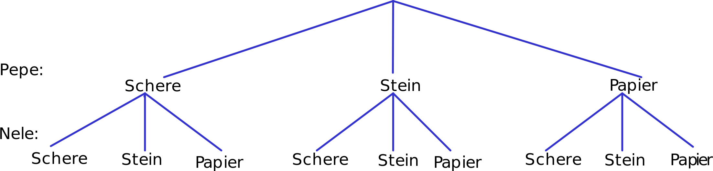
- Die Pfade, die Spielsituationen darstellen, in denen Pepe gewinnt, sind markiert:
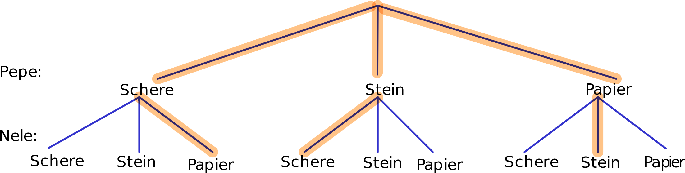
Aufgabe 1
In der Mensa der Schule kann man zwischen zwei Vorspeisen (Suppe, Salat), drei Hauptgerichten (Fleisch, vegetarisch, vegan) und zwei Nachspeisen (Joghurt, Obst) wählen.
Ermittle die Anzahl der möglichen Menüs.
Stelle die Möglichkeiten in einem Baumdiagramm dar.
Es gibt \(2\;(Vorspeisen) \cdot 3\;(Hauptgerichte) \cdot 2\;(Nachspeisen) = 12\) Menüs.
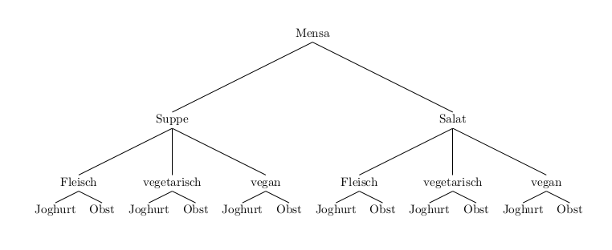
Aufgabe 2
Ein Passwort besteht aus den Buchstaben H, U und T. Jeder Buchstabe kommt genau einmal vor. Ermittle die Anzahl der möglichen Passwörter…
… rechnerisch.
… mit einem Baumdiagramm.
Man kann \(3 \cdot 2 \cdot 1 = 6\) verschiedene Passwörter erstellen.
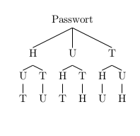
Aufgabe 3
Emily verbringt ein paar Tage in Passau. Sie möchte den Passauer Dom und die Feste Oberhaus besichtigen sowie auf einem der berühmten Schiffe ein bisschen auf Donau und Inn herumschippern. Ermittle die Anzahl der Möglichkeiten für die Reihenfolge der Besichtigungen.
Emily hat \(3 \cdot 2 \cdot 1 =6\) Möglichkeiten, ihre Tour zu gestalten:
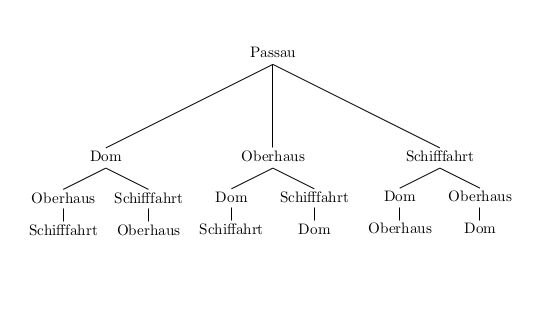
Aufgabe 4
In Peters Zimmer hängen vier Bilder. Er überlegt, die Bilder umzuhängen.
- Ermittle die Anzahl der Möglichkeiten, die vier Bilder auf die vier Plätze zu verteilen.
Peter hat \(4 \cdot 3 \cdot 2 \cdot 1= 24\) Möglichkeiten, die vier Bilder auf die vier Plätze zu verteilen:
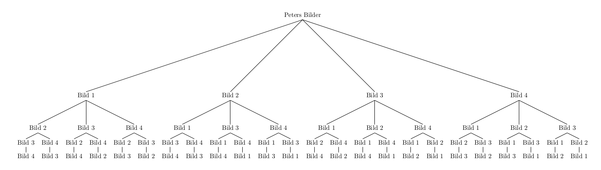
- Peter sortiert ein Bild aus und hängt die anderen drei Bilder wieder auf. Ermittle, wie sich die Anzahl der Möglichkeiten ändert. Erläutere deine Lösung.
Da Peter immer noch 4 Pätze zur Verfügung hat, hat er immer noch 24 Möglichkeiten, die nun mehr bloß drei Bilder auf die vier Plätze zu verteilen. Dabei verteilt er auch immer einen leeren Platz (also NIX).
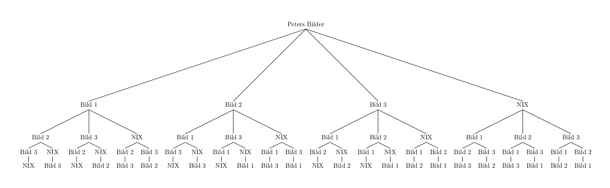
Hätte Peter nicht nur ein Bild aussortiert, sonder zusätzlich noch beschlossen, dass beispielsweise an der Wand neben der Türe nichts mehr hängen soll, hätte er nur noch \(3 \cdot 2 \cdot 1 = 6\) Möglichkeiten, die verbleibenden Bilder zu verteilen.